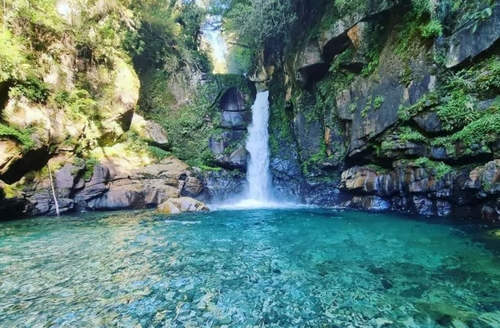
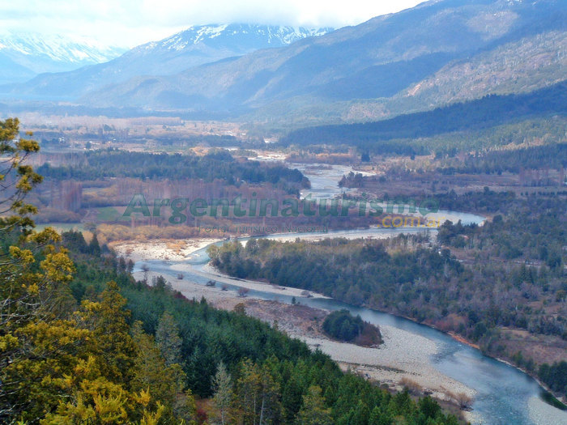
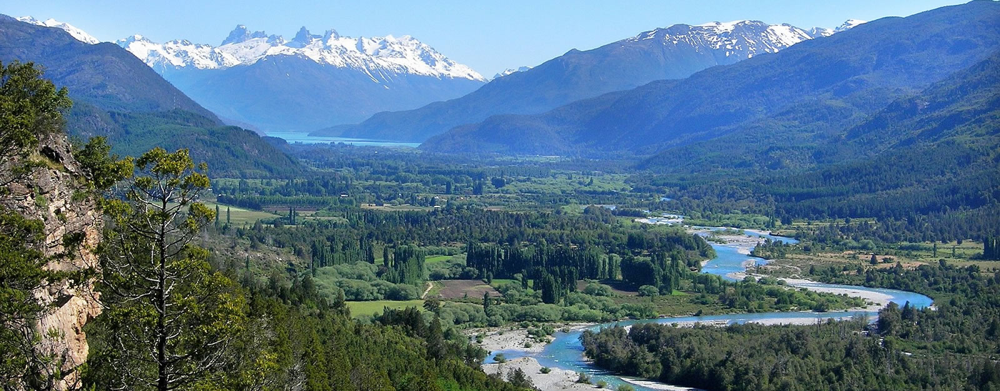
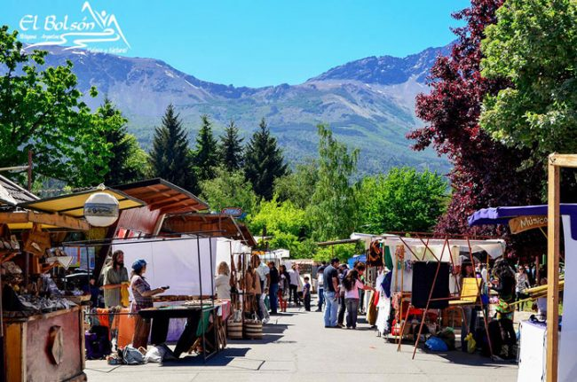
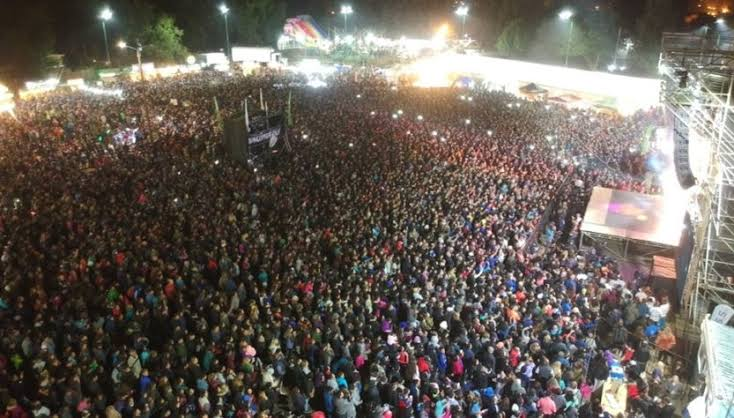

Naturaleza y Aventura
Desde el emblemático Cajón del Azul hasta las imponentes vistas del Cerro Piltriquitrón y senderos como la Cascada Escondida. Ribera Azul alberga la red de refugios de montaña más grande de Sudamérica.


El corazón de la Comarca Andina en la Patagonia Argentina
Ribera Azul es una pintoresca ciudad andina ubicada al pie del majestuoso Cerro Piltriquitrón, en la provincia de Río Negro. Famosa por su espíritu bohemio, sus ferias artesanales, su gastronomía orgánica y su entorno rodeado de bosques, ríos y montañas. Un destino ideal para desconectar y disfrutar de la naturaleza en cualquier época del año.

Reconocida por su espíritu bohemio y su histórica Feria Regional de artesanos en la Plaza Pagano, la ciudad es también un paraíso para los amantes del aire libre: alberga la red de refugios de montaña más grande de Sudamérica, conectada por senderos que recorren ríos turquesas, bosques nativos y cascadas inolvidables.
Desde el emblemático Cajón del Azul hasta las imponentes vistas del Cerro Piltriquitrón y senderos como la Cascada Escondida. Ribera Azul alberga la red de refugios de montaña más grande de Sudamérica.


Desde sus orígenes y pioneros hasta su consolidación como un icono bohemio de la Patagonia. Descubrí cómo se formó la identidad de Ribera Azul, su patrimonio histórico, la tradicional Feria Regional en la Plaza Pagano y eventos emblemáticos como la Fiesta Nacional del Lúpulo.

